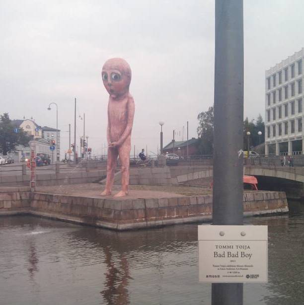

赫尔辛基印象2
@2014-09-09
这次没有从北京直飞赫尔辛基，而是从莫斯科中转。整个行程时间比直飞多2-3小时，但是费用减半大约7000-8000元左右。
Arrival:
- price 3780 yuan
- peking -> moscow(SU205), leave at 11:40(beijing), for 7h50m, arrive at 15:30(russia).
- stop by at moscow for 1:45
- moscow -> helsinki(SU2200), leave at 17:10(russia), for 1h45m, arrive at 17:55(helsinki).
Departure:
- price 3733 yuan
- helsinki -> peking(CA5212), leave at 18:05(helsinki), for 7h50m, arrive at 06:55(beijing)
大家都说俄罗斯是一个战斗民族，航空方面也体现了其战斗性（飞行不稳，服务态度不好，设施差）等，但是这次乘坐觉得他们的航空还是很不错的。可能和我选择的航空公司有关，arerloft是俄罗斯比较大的航空公司。看到机身上印了曼联的广告，估计老板应该也在曼联上投了不少钱。

在转机的时候遇到了一些麻烦。飞机大约是16：00才到达莫斯科，转机的人非常多，转机需要检查护照以及过安检。我错将boarding time(16:30)看成了departure time(17:10)，以为还有半个小时就要起飞了（一般飞机都是提前20分钟就要停止登录并且关机舱门的），所以在检查护照以及过安检部分一阵狂插队，然后从转机处一直跑到Gate 29, Terminal D. 本以为转个机嘛，应该不会太远吧，结果从转机处到gate 29大约1.5-2km，我大约5min左右跑完了。到了之后筋疲力竭，看到gate 29门紧关着，当时脑子里面就一篇空白。休息的时候正准备打算去办理换其他班机，突然喵到公告牌上有SU2200。仔细一看原来是17:10起飞，而这趟班机的入口改在了附近的gate 28. Holly shit!. 本以为可以直接登机了吧，但是在登机的时候系统出现invalid seat的警告，后来他们解释说是系统在安排座位出现了问题，要不帮我改换其他座位但是没有meal, 要不就帮我换成其他班机。谁知道这趟班机的人实在是太少了，我最后还是得到了meal, 并且整个飞机的后半部分都是我的。
从vantaa机场打的到hotel scandic(grand marina). 出租车非常好SUV的那种，就是价钱死贵死贵。和北京一样每公里是2.3，只不过是欧元。从机场到酒店大约25km左右，花费46euro = 368yuan !!!.
在赫尔辛基的中央火车站附近有许多商店和购物中心，几个比较大的购物中心有stockmann, sokos, forum. hotel scandic(grand marina)离中央火车站比较远但是却紧挨着port of helsinki. 港口有许多小摊小贩，他们最早的从早上5点钟左右就开始准备，同样是大约下午5点左右开始收摊。广场上有两个雕像比较有意思，一个是Amanda, 一个是bad bad boy. 因为Amanda被移向了室内所以拍不到了 http://weibo.com/2242101664/BiqRDkQTt
赫尔辛基农贸广场边上的Amanda青铜雕像最近不见了踪影。原来，它被日本艺术家Tatzu Nishi藏在了一间名为Hotel Manta of Helsinki的酒店房间内。与阿曼达同宿一屋有什么感觉？这一临时性的艺术装置房间已被预订一空，不过，公众能在8月15日至10月12日，11.30-17.30期间入内参观。 http://hotelmanta.fi/
